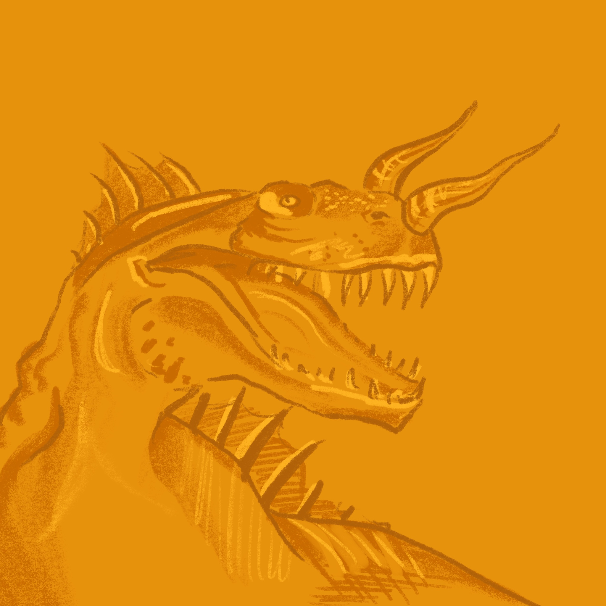
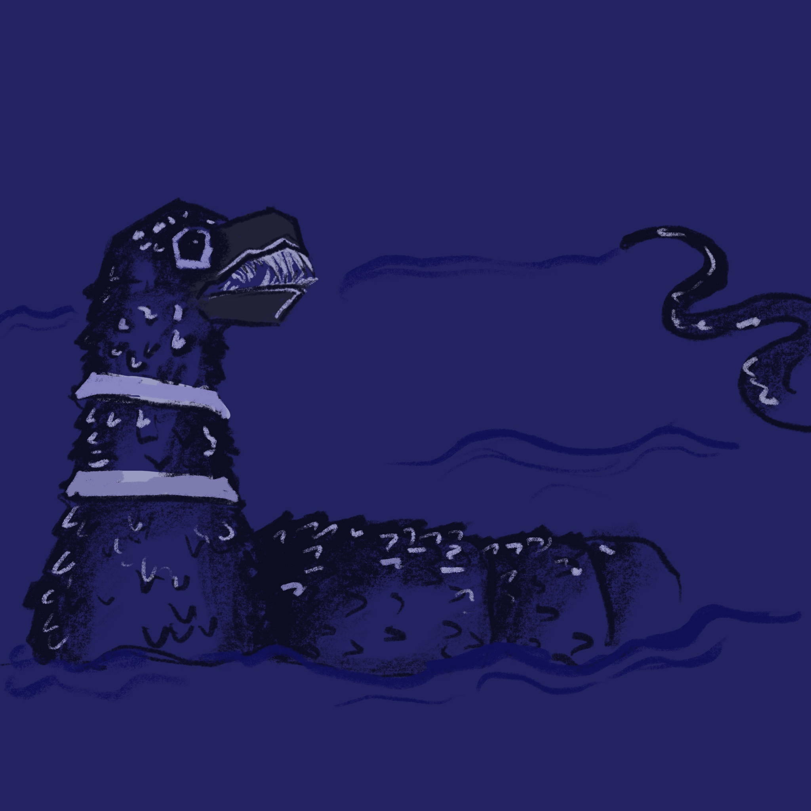
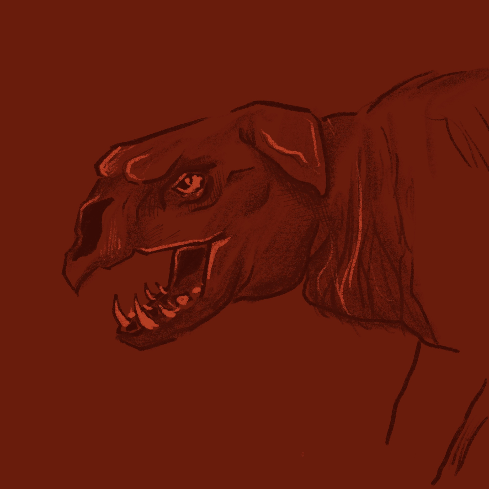

Dover Demon
Dover, Massachusetts, United States
- Sighted in town, scattered within 2 miles
- Class: Terrestrial
- Appears in the show 'Lost Tapes' and the comic book series 'Proof'
Description:
- About 4 feet tall
- No nose or mouth
- Glowing orange eyes
Canary Islands * America * Austrailia * Indian Ocean * Ireland * Argentina * Canada * Russia * Scotland * Congo * Atlantic Ocean * England * Norway * Pacific Ocean * Sweden * New Zealand * Gobi Desert * Eastern Africa * Philippines * Singapore * Afghanistan * Brazil * Sri Lanka * Indonesia * China * Himalayas *

Description

Description:

Description:
Description:

Description (Vary widely):